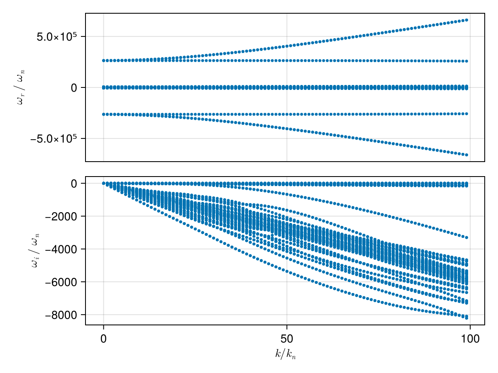
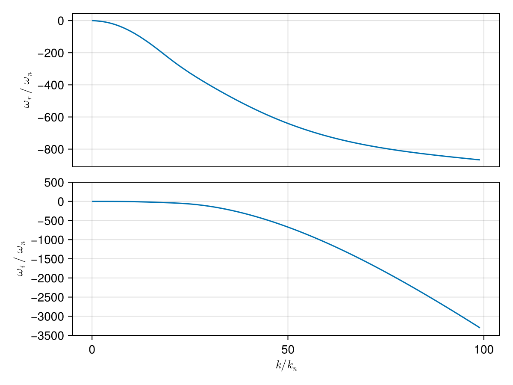
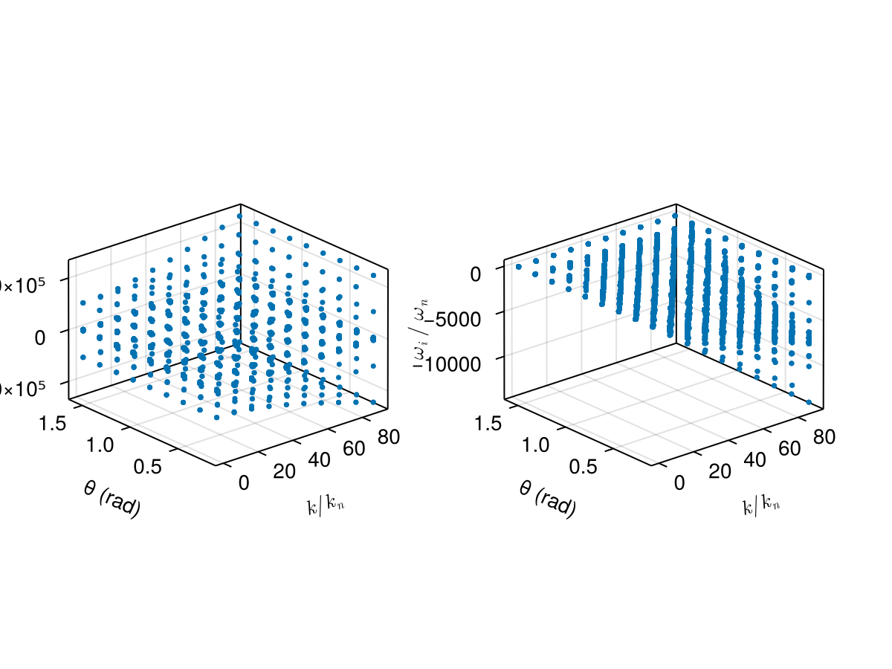

Case: Dispersion surface tracking (2D scan)
This page demonstrates how to construct a dispersion surface by scanning a 2D parameter space (wave number k and propagation angle θ) and using branch tracking to follow a consistent mode across the scan.
We consider a typical electron–proton plasma and scan:
kin normalized unitsk/k_n, wherek_n = ω_pi/cθfrom 5° to 90°
using PlasmaBO
using PlasmaBO: c0
B0 = 5e-9 # [Tesla]
n = 5.0e6
T = 12.94
ion = Maxwellian(:p, n, T)
electron = Maxwellian(:e, n, T)
species = (ion, electron)
wn = abs(B0 * ion.q / ion.m)
wpi = plasma_frequency(ion.q, n, ion.m)
kn = wpi / c0
wci = wn
# Kinetic solver settings (adjust upward for accuracy)
N = 33Dispersion Curve Scan
julia> using CairoMakiejulia> θ = deg2rad(45);julia> k_ranges = (0.01:1:100) .* kn;julia> results = solve(species, B0, k_ranges, θ; N)Solving dispersion (k, θ)... 12%|██▊ | ETA: 0:00:07 Solving dispersion (k, θ)... 23%|█████▎ | ETA: 0:00:07 Solving dispersion (k, θ)... 33%|███████▋ | ETA: 0:00:06 Solving dispersion (k, θ)... 43%|█████████▉ | ETA: 0:00:06 Solving dispersion (k, θ)... 52%|████████████ | ETA: 0:00:05 Solving dispersion (k, θ)... 61%|██████████████ | ETA: 0:00:04 Solving dispersion (k, θ)... 69%|███████████████▉ | ETA: 0:00:03 Solving dispersion (k, θ)... 77%|█████████████████▊ | ETA: 0:00:03 Solving dispersion (k, θ)... 84%|███████████████████▍ | ETA: 0:00:02 Solving dispersion (k, θ)... 91%|████████████████████▉ | ETA: 0:00:01 Solving dispersion (k, θ)... 98%|██████████████████████▌| ETA: 0:00:00 Solving dispersion (k, θ)... 100%|███████████████████████| Time: 0:00:12 PlasmaBO.DispersionSolution{StepRangeLen{Float64, Base.TwicePrecision{Float64}, Base.TwicePrecision{Float64}, Int64}, Float64, Matrix{Vector{ComplexF64}}}(9.81977277497953e-8:9.819772774979531e-6:0.0009722557024507233, 0.7853981633974483, Vector{ComplexF64}[[-126621.46727634096 + 5.179429188028554e-11im, -126181.23357016452 + 2.227713502404904e-9im, -125742.53625411872 - 4.948571862757568e-11im, -2638.5615125116187 - 0.24087074984951373im, -2638.561512511613 - 0.24087074985152412im, -2638.561512511595 - 0.24087074985129675im, -2638.4470794029753 - 0.26511858494146084im, -2638.447079402962 - 0.2651185849417549im, -2638.4470794029608 - 0.26511858494049173im, -2638.354345226277 - 0.28028464658626023im … 2638.3543452262834 - 0.28028464658659696im, 2638.44707940298 - 0.26511858494188256im, 2638.4470794029803 - 0.2651185849419975im, 2638.4470794029826 - 0.26511858494195445im, 2638.5615125116 - 0.2408707498507857im, 2638.5615125116115 - 0.24087074985079707im, 2638.561512511614 - 0.24087074985075643im, 125742.53625411855 - 5.0601298628519874e-11im, 126181.23357016436 - 2.3582645599171216e-9im, 126621.46727634137 + 4.856066143613829e-11im]; [-126647.93289207436 + 3.256506175830509e-12im, -126198.7801848471 + 1.0355979340682729e-9im, -125768.49400408426 + 8.254813499419811e-11im, -2671.7111478483052 - 24.327945734953886im, -2671.7111478482993 - 24.327945734952632im, -2671.711147595337 - 24.327946383220755im, -2660.1534038758227 - 26.77697707914872im, -2660.1534038758223 - 26.77697707915057im, -2660.153393709821 - 26.776965185601288im, -2650.7873334603164 - 28.308737350694173im … 2650.787333460303 - 28.30873735069419im, 2660.1533937098134 - 26.776965185600844im, 2660.1534038758173 - 26.776977079149866im, 2660.15340387583 - 26.776977079149844im, 2671.7111475953166 - 24.32794638322099im, 2671.71114784829 - 24.327945734953357im, 2671.711147848303 - 24.327945734953854im, 125768.49400408356 - 1.754911955608795e-11im, 126198.78018484643 + 2.5885813111474724e-9im, 126647.93289207465 - 8.270838550079204e-11im]; … ; [-313940.64254257735 - 4.565627527435294e-8im, -313861.54641744297 - 4.9721702960563094e-8im, -123618.23036716043 - 2.4524350778640947e-5im, -5887.225775507057 - 2360.77421928982im, -5887.056696386677 - 2360.9532339551097im, -5774.271214584563 - 2344.216598344488im, -5223.734491155816 - 2588.8106209917355im, -5109.542451363742 - 2214.224837475268im, -5007.8157701210075 - 2360.774219289861im, -5006.872705233684 - 2361.6957751309214im … 5006.872705233732 - 2361.6957751309355im, 5007.815770120999 - 2360.774219289832im, 5109.542451363659 - 2214.2248374752376im, 5223.73449115581 - 2588.8106209917405im, 5774.2712145845535 - 2344.216598344492im, 5887.056696386689 - 2360.9532339551133im, 5887.225775507068 - 2360.774219289837im, 123618.23036716096 - 2.4524781499121934e-5im, 313861.54641744297 - 4.9777554522734135e-8im, 313940.64254257694 - 4.5716461727352e-8im]; [-316611.4691783674 - 3.812504734295463e-8im, -316532.8275260987 - 5.7769120150623076e-8im, -123505.55495900544 - 2.591532213444978e-5im, -5920.375410843752 - 2384.861294274927im, -5920.198173900924 - 2385.0485721136356im, -5802.211344748053 - 2366.0793521386im, -5259.865772167278 - 2621.375288947612im, -5147.171836823944 - 2234.949525972826im, -5040.965405457749 - 2384.8612942749514im, -5039.996688056812 - 2385.8060513072646im … 5039.996688056817 - 2385.8060513072733im, 5040.965405457718 - 2384.861294274954im, 5147.17183682395 - 2234.9495259728137im, 5259.865772167358 - 2621.3752889476036im, 5802.211344748067 - 2366.0793521386086im, 5920.198173900918 - 2385.048572113632im, 5920.375410843789 - 2384.861294274944im, 123505.55495900505 - 2.5914644094361474e-5im, 316532.8275260984 - 5.755009624408558e-8im, 316611.4691783674 - 3.798027137236204e-8im];;])
plot(results, kn, wn)
using PlasmaBO: plot_branches
# k, ω pairs for initial branch points (see `BranchPoint` for more control over tracking)
initial_point = (50 * kn, -600 * wn *im)
branch = track(results, initial_point)
f, (ax1, ax2) = plot_branches((branch,), kn, wn)
ylims!(ax2, -3500,500)
f
Dispersion Surface Scan (2D)
julia> ks = (0.1:10:100.0) .* kn;julia> θs = deg2rad.(10.0:10.0:90.0);julia> res2d = solve(species, B0, ks, θs; N)Solving dispersion (k, θ)... 13%|███▏ | ETA: 0:00:07 Solving dispersion (k, θ)... 26%|█████▉ | ETA: 0:00:06 Solving dispersion (k, θ)... 36%|████████▏ | ETA: 0:00:06 Solving dispersion (k, θ)... 46%|██████████▌ | ETA: 0:00:05 Solving dispersion (k, θ)... 56%|████████████▊ | ETA: 0:00:04 Solving dispersion (k, θ)... 66%|███████████████▏ | ETA: 0:00:03 Solving dispersion (k, θ)... 76%|█████████████████▍ | ETA: 0:00:02 Solving dispersion (k, θ)... 86%|███████████████████▋ | ETA: 0:00:01 Solving dispersion (k, θ)... 96%|██████████████████████ | ETA: 0:00:00 Solving dispersion (k, θ)... 100%|███████████████████████| Time: 0:00:10 PlasmaBO.DispersionSolution{StepRangeLen{Float64, Base.TwicePrecision{Float64}, Base.TwicePrecision{Float64}, Int64}, Vector{Float64}, Matrix{Vector{ComplexF64}}}(9.81977277497953e-7:9.81977277497953e-5:0.0008847615270256557, [0.17453292519943295, 0.3490658503988659, 0.5235987755982988, 0.6981317007977318, 0.8726646259971648, 1.0471975511965976, 1.2217304763960306, 1.3962634015954636, 1.5707963267948966], Vector{ComplexF64}[[-126621.80061866203 + 1.4576484886740654e-10im, -126181.24223376115 + 5.879108562903024e-10im, -125742.87426458843 + 6.04966314605884e-11im, -2642.846860283877 - 3.354675534705849im, -2642.846860283872 - 3.3546755347065793im, -2642.846860283847 - 3.3546755347061im, -2641.2531177886026 - 3.692382039957943im, -2641.2531177885803 - 3.6923820399574154im, -2641.253117788577 - 3.692382039954296im, -2639.9615824983894 - 3.9036040998664774im … 2639.961582498411 - 3.9036040998662562im, 2641.2531177885708 - 3.692382039957617im, 2641.253117788572 - 3.6923820399538214im, 2641.253117788579 - 3.692382039957824im, 2642.8468602838598 - 3.354675534705958im, 2642.8468602838625 - 3.3546755347064163im, 2642.8468602838725 - 3.354675534705542im, 125742.87426458889 - 1.4700420185137448e-10im, 126181.24223376118 - 5.90168511385231e-10im, 126621.80061866202 - 6.101971955140099e-11im] [-126621.78542391447 + 3.334542082560066e-11im, -126181.2720491086 + 2.7303181902130504e-9im, -125742.85883577736 + 1.578268939963958e-10im, -2642.6353575489024 - 3.200994138656327im, -2642.635357548889 - 3.200994138656222im, -2642.6353575488693 - 3.2009941386593384im, -2641.114626159756 - 3.523229935445362im, -2641.1146261597532 - 3.523229935445031im, -2641.114626159695 - 3.5232299353839878im, -2639.882257529868 - 3.724775679142536im … 2639.8822575298873 - 3.7247756791434097im, 2641.114626159718 - 3.5232299353839265im, 2641.1146261597864 - 3.5232299354446703im, 2641.11462615979 - 3.523229935445452im, 2642.635357548894 - 3.2009941386559992im, 2642.635357548898 - 3.2009941386585785im, 2642.635357548908 - 3.200994138655007im, 125742.85883577744 - 3.059977781132316e-11im, 126181.2720491086 - 2.7277908138146466e-9im, 126621.78542391416 - 1.5798922403681223e-10im] … [-126621.64002585228 + 2.6889458118895676e-10im, -126181.56492171818 - 1.3802483866167336e-9im, -125742.71135516863 + 1.1706665774572841e-12im, -2639.044090343326 - 0.591519808290476im, -2639.0440903433077 - 0.591519808291423im, -2639.044090343231 - 0.5915198085226676im, -2638.7630705410998 - 0.6510665767275481im, -2638.7630705410893 - 0.651066576728027im, -2638.7630705374054 - 0.651066572531735im, -2638.535338052078 - 0.688310720059002im … 2638.535338052069 - 0.6883107200584533im, 2638.7630705374218 - 0.651066572531867im, 2638.7630705410884 - 0.6510665767288997im, 2638.7630705411 - 0.6510665767288163im, 2639.0440903432304 - 0.5915198085230107im, 2639.044090343319 - 0.5915198082910617im, 2639.044090343327 - 0.591519808290808im, 125742.71135516856 - 2.7198546234726473e-10im, 126181.56492171816 + 1.3791856292644671e-9im, 126621.6400258521 - 1.0745043098226417e-12im] [-126621.6348825435 - 7.457673284868686e-11im, -126181.57527634641 - 1.597072696313262e-9im, -125742.70614358928 + 1.3326958885849689e-10im, -2638.2300161582803 + 3.594138875406827e-13im, -2638.2300161582793 + 5.684341886080802e-14im, -2638.2300161582743 + 2.007803645565076e-13im, -2638.2300161582702 + 1.7852386235972517e-13im, -2638.2300161582607 + 1.847413732046854e-13im, -2638.2300161582602 - 5.115907697472721e-13im, -2638.2300161582593 - 6.465938895416912e-13im … 2638.230016158258 - 1.7141843500212417e-13im, 2638.2300161582602 + 3.339550858072471e-13im, 2638.2300161582625 + 1.0987296217829545e-13im, 2638.2300161582652 - 4.263256414560601e-14im, 2638.2300161582652 + 9.291997592611751e-14im, 2638.230016158266 - 1.0791367799356522e-13im, 2638.2300161582707 + 6.252776074688882e-13im, 125742.70614358952 + 7.32454741220099e-11im, 126181.5752763465 + 1.6372041500289924e-9im, 126621.63488254341 - 1.28694890340548e-10im]; [-130046.2318010717 - 1.4376792726332425e-10im, -129226.35672741343 + 2.5234938262656815e-10im, -126179.48881185573 - 2.4905048716721498e-9im, -3104.5312728462573 - 338.82222900534225im, -3104.531272846241 - 338.82222900534344im, -3104.531257968957 - 338.82225557320396im, -2943.563280822041 - 372.9305860357972im, -2943.5632808220244 - 372.93058603577236im, -2943.5629492920116 - 372.9300363355774im, -2813.1214069623056 - 394.2641424791402im … 2813.121406962327 - 394.26414247914227im, 2943.562949292027 - 372.9300363355779im, 2943.563280822031 - 372.93058603577043im, 2943.5632808220494 - 372.9305860357993im, 3104.531257968985 - 338.8222555732058im, 3104.5312728462586 - 338.82222900534106im, 3104.531272846268 - 338.8222290053472im, 126179.48881185541 - 2.8938877960626996e-9im, 129226.35672741353 - 3.1284506769772683e-10im, 130046.23180107154 - 2.9519185851992667e-10im] [-130020.12452199496 + 2.7261507495218975e-10im, -129238.36480585279 - 5.261959438467981e-10im, -126168.23913101149 - 1.3925001144232546e-9im, -3083.169496612847 - 323.30040800420835im, -3083.1694966127993 - 323.3004080042881im, -3083.1692757925684 - 323.30080396483777im, -2929.575626311535 - 355.84622347995787im, -2929.5756263103876 - 355.8462234783674im, -2929.5706565880305 - 355.8380503635012im, -2805.1539693972786 - 376.20400084301673im … 2805.15396939728 - 376.2040008430178im, 2929.570656588034 - 355.83805036349855im, 2929.575626310411 - 355.84622347837126im, 2929.57562631153 - 355.8462234799566im, 3083.1692757925803 - 323.30080396483686im, 3083.1694966128057 - 323.3004080042889im, 3083.169496612834 - 323.3004080042097im, 126168.23913101165 - 2.0658550425878275e-9im, 129238.36480585256 + 7.002322928942012e-11im, 130020.12452199437 - 2.961914605238554e-10im] … [-129717.7669890636 - 1.337646705396028e-10im, -129565.629664822 - 1.0772851282621904e-9im, -126098.71047222387 - 5.047082138391544e-12im, -2720.451508850613 - 59.74350063742408im, -2720.4515087463274 - 59.743500890125496im, -2720.4410473859384 - 59.76658704798213im, -2692.068508826309 - 65.75772424952626im, -2692.0685049451363 - 65.75771955865294im, -2691.7332892098425 - 65.28442184344058im, -2671.573974835495 - 69.52398918934817im … 2671.573974835505 - 69.52398918934854im, 2691.7332892098675 - 65.28442184343885im, 2692.068504945122 - 65.75771955865329im, 2692.068508826252 - 65.75772424952558im, 2720.441047385946 - 59.76658704797984im, 2720.4515087463606 - 59.74350089012279im, 2720.4515088505955 - 59.74350063742422im, 126098.71047222379 + 3.708827906248602e-11im, 129565.62966481966 + 5.584075262148247e-10im, 129717.76698906207 - 2.2711119851080576e-11im] [-129668.76650537815 - 1.563124160155586e-10im, -129616.10202991558 + 8.76724779718113e-12im, -126096.80894501724 + 1.403843082834727e-10im, -2638.230016158428 + 1.5586381714219164e-10im, -2638.2300161582707 - 6.338263247585019e-13im, -2638.230016158264 + 4.1022740759899534e-13im, -2638.2300161582625 + 9.237055564881302e-14im, -2638.2300161582625 + 1.4566126083082054e-13im, -2638.230016158259 + 1.4921397450962104e-13im, -2638.230016158258 - 2.0961010704922955e-13im … 2638.230016158252 - 5.412559289652563e-12im, 2638.2300161582525 - 1.2363443602225743e-12im, 2638.2300161582566 - 4.4515074866056563e-13im, 2638.23001615826 + 2.8334454908566885e-13im, 2638.2300161582607 + 3.478938756016392e-13im, 2638.230016158263 + 5.489529438311624e-13im, 2638.230016158267 + 5.6371574075342323e-14im, 126096.80894501731 - 1.5598753897009326e-10im, 129616.10202991778 - 6.617844436701436e-10im, 129668.76650537801 + 1.7365104602094906e-10im]; … ; [-267526.689701137 - 1.396268034174921e-8im, -267333.9463584653 - 1.463914526783252e-8im, -126172.77219117098 - 8.131278062608115e-5im, -6336.322160782866 - 2687.0951032998196im, -6336.3221590747 - 2687.0951046508926im, -6336.238399861383 - 2687.144919316498im, -5456.912155396803 - 2687.095103299794im, -5456.911892188267 - 2687.0952728599113im, -5452.3507537816295 - 2688.5246277113824im, -5059.887961382782 - 2955.986624764834im … 5059.88796138283 - 2955.986624764861im, 5452.350753781644 - 2688.52462771137im, 5456.911892188245 - 2687.0952728599045im, 5456.912155396777 - 2687.095103299812im, 6336.238399861383 - 2687.1449193165163im, 6336.322159074712 - 2687.095104650898im, 6336.322160782877 - 2687.0951032998128im, 126172.77219117108 - 8.131347203160156e-5im, 267333.9463584658 - 1.465377863496542e-8im, 267526.6897011378 - 1.3948010746389627e-8im] [-267503.4261524522 - 4.309996037782939e-8im, -267319.98428880883 - 4.450592606289379e-8im, -126162.6796377588 - 5.8744924485627895e-5im, -6166.90847006052 - 2563.9963050630668im, -6166.908058156661 - 2563.9966482426703im, -6164.913344602639 - 2564.449767607718im, -5287.498464674459 - 2563.9963050630804im, -5287.483269961907 - 2564.008140618276im, -5251.723729621485 - 2561.224472491397im, -4965.899650699212 - 2797.0124659387993im … 4965.899650699219 - 2797.0124659387902im, 5251.723729621534 - 2561.224472491419im, 5287.483269961902 - 2564.0081406182876im, 5287.498464674416 - 2563.9963050630577im, 6164.913344602659 - 2564.449767607709im, 6166.908058156647 - 2563.996648242663im, 6166.9084700605345 - 2563.9963050630736im, 126162.6796377593 - 5.874563063617781e-5im, 267319.984288809 - 4.446451384865213e-8im, 267503.4261524527 - 4.3270119931548834e-8im] … [-266971.7163171807 + 6.716868612483267e-11im, -265749.9611086697 + 6.829701879295967e-11im, -118413.00558056627 - 5.369955570303415e-10im, -3290.3034384015705 - 473.80736644135334im, -3290.13143687316 - 474.11199823526323im, -3257.8228059653493 - 512.8095690843857im, -3222.7561454919473 - 423.9507109118309im, -3065.206576822439 - 521.504327959107im, -3061.7978352007813 - 514.4723377181107im, -2972.3664005259307 - 742.6364618166035im … 2972.3664005259307 - 742.6364618166104im, 3061.7978352008076 - 514.4723377181142im, 3065.206576822457 - 521.5043279591107im, 3222.7561454918946 - 423.95071091185014im, 3257.8228059653275 - 512.8095690843684im, 3290.1314368731487 - 474.11199823526266im, 3290.3034384016078 - 473.8073664413535im, 118413.00558056637 - 6.665439185988606e-10im, 265749.9611086711 + 8.254585968836596e-11im, 266971.71631718153 - 1.2315926056771787e-10im] [-267036.4338290159 - 8.142319518636623e-11im, -265686.8054326456 + 2.2808106680244102e-11im, -117722.58317984059 + 4.094280726793168e-11im, -2638.2300161582593 - 5.771537412486617e-13im, -2638.2300161582575 - 1.8189894035458565e-12im, -2638.230016158251 - 6.679101716144942e-13im, -2638.230016158251 - 4.227729277772596e-13im, -2638.230016158249 - 1.0210161676350084e-12im, -2638.230016158249 + 6.532134873552285e-12im, -2638.2300161582484 - 9.114931032172535e-13im … 2638.2300161582525 - 8.446596267727753e-14im, 2638.2300161582525 - 4.068668705873526e-14im, 2638.2300161582534 - 1.1587675263768915e-12im, 2638.230016158254 - 3.637978807091713e-12im, 2638.2300161582557 - 8.767751902197568e-13im, 2638.2300161582575 + 2.3874235921539366e-12im, 2638.2300161582593 - 4.8232251526059144e-14im, 117722.58317984054 - 4.412029489242518e-11im, 265686.8054326448 - 2.0442314507818082e-11im, 267036.43382901564 + 1.7546637424976957e-10im]; [-293795.77994125267 - 1.4142075263566924e-8im, -293635.99998901755 - 1.4805029761075893e-8im, -126176.20945010305 - 0.00014532893003399276im, -6798.006573345279 - 3022.562656770436im, -6798.006569082705 - 3022.562659875153im, -6797.868548884231 - 3022.6266227249107im, -5918.596567959204 - 3022.5626567704476im, -5918.596049435929 - 3022.562980651732im, -5912.412511842653 - 3023.711054945781im, -5362.546384741915 - 3324.6220094755927im … 5362.546384741921 - 3324.622009475572im, 5912.412511842642 - 3023.711054945804im, 5918.596049435898 - 3022.5629806517427im, 5918.596567959163 - 3022.5626567704294im, 6797.868548884252 - 3022.6266227249016im, 6798.006569082724 - 3022.5626598751414im, 6798.006573345241 - 3022.5626567704526im, 126176.20945010328 - 0.00014532947347578219im, 293635.99998901715 - 1.4893885236233473e-8im, 293795.7799412522 - 1.4282704796642065e-8im] [-293760.4724871609 - 4.401997090718595e-8im, -293608.73013647425 - 4.5736875381997616e-8im, -126161.30746211295 - 0.00010508998895312493im, -6607.442609124449 - 2884.095718928618im, -6607.441666758575 - 2884.096504753379im, -6603.932590101823 - 2884.454698933313im, -5728.032603738375 - 2884.095718928627im, -5728.005596155162 - 2884.117128739104im, -5675.996686715468 - 2874.633734081997im, -5269.211112220572 - 3146.1229528952695im … 5269.211112220573 - 3146.1229528952836im, 5675.996686715508 - 2874.6337340819746im, 5728.0055961551725 - 2884.1171287391116im, 5728.032603738409 - 2884.095718928627im, 6603.93259010179 - 2884.4546989333157im, 6607.441666758558 - 2884.0965047533823im, 6607.4426091244695 - 2884.0957189286173im, 126161.30746211299 - 0.0001050920359602856im, 293608.73013647454 - 4.575031198328361e-8im, 293760.47248716117 - 4.4055923353880644e-8im] … [-292980.778592987 + 4.369567190241924e-11im, -291734.3181264648 + 3.394566321147361e-11im, -114316.92957399439 - 1.3001572593374593e-9im, -3371.710856908901 - 532.9593472704911im, -3371.45185560999 - 533.4071868750945im, -3335.4645308844742 - 586.1181888842474im, -3304.836685813188 - 469.5498780833413im, -3118.5120151076303 - 586.6109856319091im, -3113.884163132721 - 575.9049885785522im, -3014.455552918307 - 846.6845431084773im … 3014.45555291828 - 846.6845431084602im, 3113.884163132717 - 575.9049885785523im, 3118.512015107638 - 586.6109856319091im, 3304.8366858131967 - 469.54987808335363im, 3335.4645308844865 - 586.1181888842317im, 3371.451855610004 - 533.4071868750981im, 3371.7108569088664 - 532.9593472704902im, 114316.92957399439 - 1.3355594570175417e-9im, 291734.3181264643 + 9.262930156877337e-12im, 292980.77859298757 - 4.861533398070605e-10im] [-293060.7825108117 + 2.510838094023992e-11im, -291674.0854377937 + 7.482305676227068e-13im, -113340.75968884502 + 1.9918412721706885e-11im, -2638.2300161585554 + 2.733287374212523e-9im, -2638.230016158272 - 3.410605131648481e-13im, -2638.2300161582602 + 1.095649425276888e-13im, -2638.2300161582593 - 9.75034625038319e-13im, -2638.230016158259 - 8.459899447643693e-14im, -2638.230016158258 - 3.206324095117452e-13im, -2638.230016158252 + 8.412751009865444e-14im … 2638.230016158247 - 2.336000291330328e-13im, 2638.230016158247 - 1.4897732117059258e-13im, 2638.230016158252 - 1.3661698183321802e-13im, 2638.2300161582534 + 1.4566126083082054e-12im, 2638.230016158254 - 3.226308109560705e-13im, 2638.2300161582602 - 3.834155215542978e-13im, 2638.2300161582643 + 8.326006550873899e-12im, 113340.75968884506 - 2.2242503763461778e-11im, 291674.08543779363 + 1.8104628907167353e-11im, 293060.7825108126 + 2.3196919581897458e-10im]])
plot(res2d, kn, wn)
# Choose a reference angle and reference k for seeding the tracked mode
seed = (90.5 * kn, deg2rad(20), (1000 - 3000im) * wn)
branch = track(res2d, seed)
plot_branches((branch,), kn, wn)